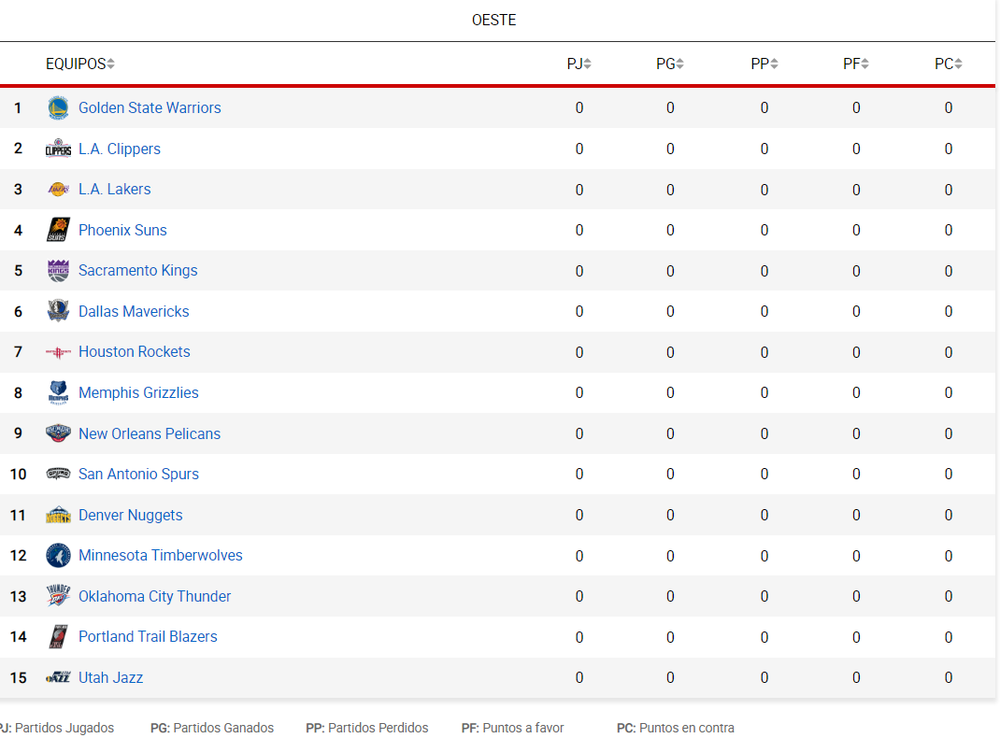

La Conferencia Oeste es una de las dos conferencias, junto a la Conferencia Este, que componen la estructura organizativa de la NBA. Fundada en 1946, ambas están compuestas por quince equipos y organizadas en tres divisiones de cinco equipos cada una. Se llamó "Western Division" ("División Oeste") hasta 1970, cuando se renombró a ""Western Conference" ("Conferencia Oeste"). En total, por cada conferencia se clasifican 8 equipos. Los líderes de cada división se clasifican matemáticamente para disputar los playoffs, mientras que los 5 equipos restantes serán los que posean mejor balance victorias-derrotas.
1947: Chicago Stags. 1948: Baltimore Bullets 1949: Minneapolis Lakers. 1950: Minneapolis Lakers. 1951: Rochester Royals. 1952: Minneapolis Lakers. 1953: Minneapolis Lakers. 1954: Minneapolis Lakers. 1955: Ft. Wayne Pistons. 1956: Ft. Wayne Pistons. 1957: St. Louis Hawks. 1958: St. Louis Hawks. 1959: Minneapolis Lakers. 1960: St. Louis Hawks. 1961: St. Louis Hawks. 1962: Los Angeles Lakers. 1963: Los Angeles Lakers. 1964: San Francisco Warriors. 1965: Los Angeles Lakers. 1966: Los Angeles Lakers. 1967: San Francisco Warriors. 1968: Los Angeles Lakers. 1969: Los Angeles Lakers. 1970: Los Angeles Lakers. 1971: Milwaukee Bucks. 1972: Los Angeles Lakers. 1973: Los Angeles Lakers. 1974: Milwaukee Bucks. 1975: Golden State Warriors. 1976: Phoenix Suns. 1977: Portland Trail Blazers. 1978: Seattle SuperSonics. 1979: Seattle SuperSonics. 1980: Los Angeles Lakers. 1981: Houston Rockets. 1982: Los Angeles Lakers. 1983: Los Angeles Lakers. 1984: Los Angeles Lakers. 1985: Los Angeles Lakers. 1986: Houston Rockets. 1987: Los Angeles Lakers. 1988: Los Angeles Lakers. 1989: Los Angeles Lakers. 1990: Portland Trail Blazers. 1991: Los Angeles Lakers. 1992: Portland Trail Blazers. 1993: Phoenix Suns. 1994: Houston Rockets. 1995: Houston Rockets. 1996: Seattle SuperSonics. 1997: Utah Jazz. 1998: Utah Jazz. 1999: San Antonio Spurs. 2000: Los Angeles Lakers. 2001: Los Angeles Lakers. 2002: Los Angeles Lakers. 2003: San Antonio Spurs. 2004: Los Angeles Lakers. 2005: San Antonio Spurs. 2006: Dallas Mavericks. 2007: San Antonio Spurs. 2008: Los Angeles Lakers. 2009: Los Angeles Lakers. 2010: Los Angeles Lakers. 2011: Dallas Mavericks. 2012: Oklahoma City Thunder. 2013: San Antonio Spurs. 2014: San Antonio Spurs. 2015: Golden State Warriors. 2016: Golden State Warriors. 2017: Golden State Warriors. 2018: Golden State Warriors. 2019: Golden State Warriors. 2020: Los Angeles Lakers. 2021: Phoenix Suns.
32: Minneapolis / Los Angeles Lakers. 8: Golden State / San Francisco Warriors. 6: San Antonio Spurs. 4: Houston Rockets. 4: Atlanta / St. Louis Hawks. 3: Seattle SuperSonics. 3: Portland Trail Blazers. 3: Phoenix Suns. 2: Dallas Mavericks. 2: Detroit / Ft. Wayne Pistons. 2: Milwaukee Bucks. 2: Utah Jazz. 1: Chicago Stags. 1: Baltimore Bullets. 1: Oklahoma City Thunder. 1: Sacramento Kings / Rochester Royals.